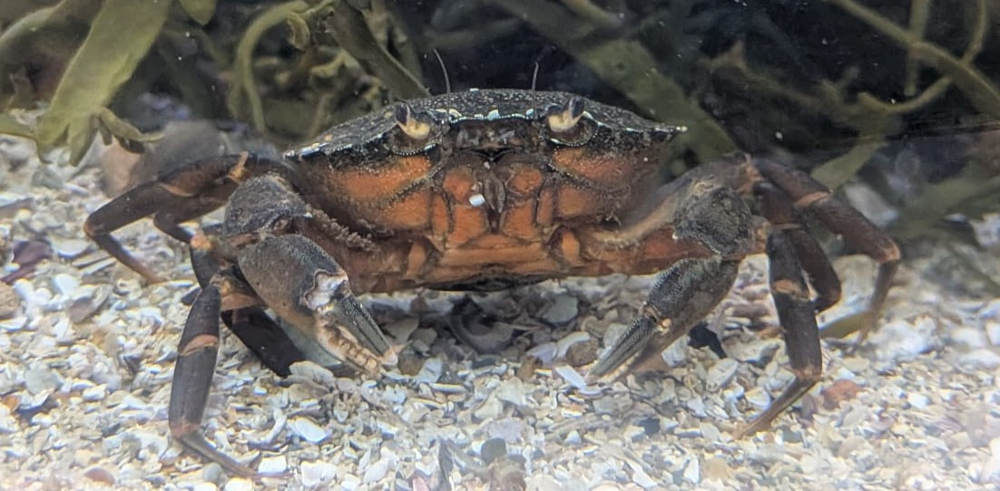

Crabe vert
Carcinus maenas
Le crabe vert est un petit crabe très répandu sur les côtes européennes. Il fréquente aussi bien les zones rocheuses que les fonds vaseux et sableux.
Informations scientifiques
| Nom scientifique | Carcinus maenas |
|---|---|
| Nom commun | Crabe vert |
| Famille | Carcinidae |
| Infra-ordre | Brachyura |
| Ordre | Decapoda |
| Classe | Malacostraca |
| Habitat | Estran rocheux, sableux et vaseux |
| Répartition | Côtes européennes de l'Atlantique et Méditerranée |
| Longueur | Jusqu'à environ 6 cm de largeur de carapace |
| Alimentation | Mollusques, petits crustacés, vers et débris organiques |
Description
Le crabe vert possède une carapace relativement large et aplatie,
avec des couleurs pouvant varier du vert au brun ou au gris en passant par le rouge.
Il est particulièrement bien adapté à la vie sur l'estran et supporte
des variations importantes de température et de salinité. Il peut être
observé sous les pierres ou dans les zones vaseuses et sableuses.
C'est une espèce opportuniste qui se nourrit d'une grande variété
d'animaux et de matières organiques.